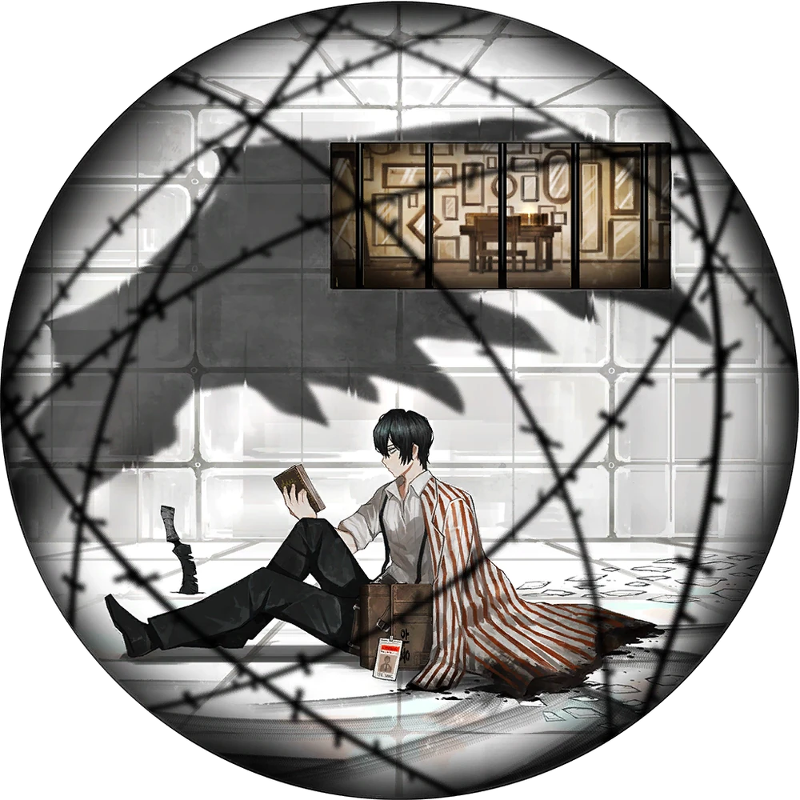

Joshua Chua's Personal Website
Welcome to this website about me👋, It's not much but if you're here I hope you like it!
All the pictures below are of my favorite game character 😊

"Utter to me what you think the ideal is."
-Yi Sang, Crow's Eye View
My Hobbies
-Rarely, I would edit videos of me playing games. Dont really have time for it anymore in grade 9
-Oh and speaking of games, I play them with friends very often whenever I have the chance.
-I also sing a lot when I'm alone, but only rarely sing when in public (I've only done it thrice from grade 7 to 9)
"I wish that this will serve as a tool of entertainment... giving us more joy."
-Yi Sang, LCB Sinner
My Interests
-Playing lots (like a lot) of games in the weekends.
-Listening to music everytime. The main songs that I like as of right now are "Fly, My Wings" by Mili, "Empty Diary" by Peak Divide, and "summer nights" by LilyPichu
-Watching anime and social media, mainly One Piece and Youtube.
-Taking random naps throughout the day.
(I sleep at 12 midnight so im always sleepy.)
Thoughts that never leave my head
-How long until I finally get a good amount of sleep?
-Would I rather get unlimited bacon, but no games. Or games, unlimited games, but no games?
-Why am I so shy to speak about my ideas and opinions around classmates?
-Will I slowly lose my elem friends if I stop playing and go all in when studying?
-Will I be able to find my Ideal "me"?
(Little existensial with the last ones but it really is something I always think about...)
"I worry that this seeping rain may leak through the umbrella."
-Yi Sang, Sunshower
My slightly boring week as a dormer
-Most of my time in the dorm is just studying, sometimes browsing youtube, and often having an existential crisis.
-At night, I try to study but then get the sudden urge to sleep for an hour. Once I wake up, I do nothing but cram until midnight then instantly go to sleep.
-Once I wake up, I eat 2 slices of bread then change to my school uniform. Sometimes I dont eat anything at all.
"Haah... When will this cycle be broken?"
-Yi Sang, W Corp. L3 Cleanup Agent